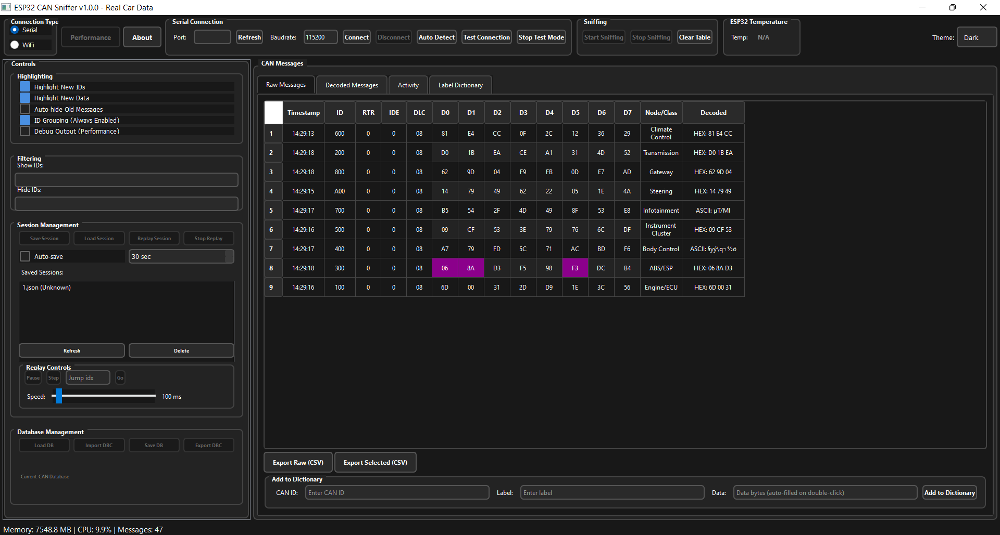
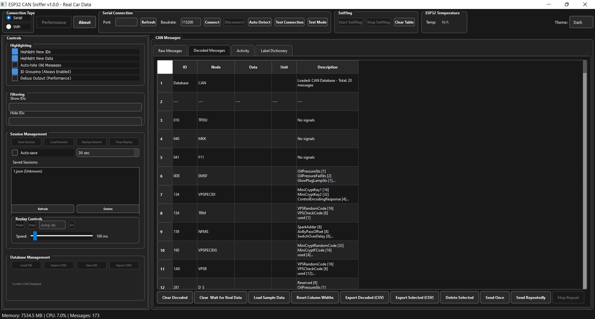
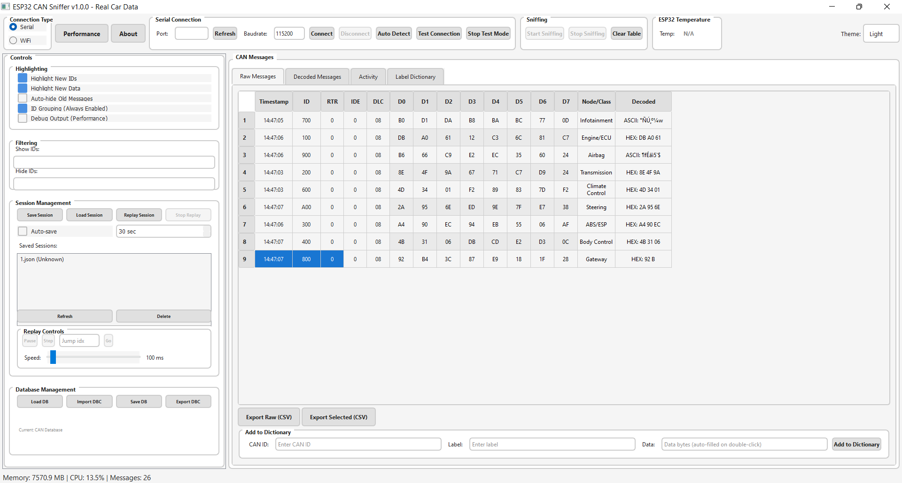

Real-time CAN monitoring with live filters and stream stats.

Decoder workspace, tested with Fiat / Alfa / Lancia dictionary.

Instantly switch between sleek dark mode and airy light mode while keeping the same layout.
ESP32 CAN Sniffer Desktop Suite
Professional-grade CAN bus monitoring and analysis software designed for automotive diagnostics, reverse engineering, and development workflows. Version 1.0.0 - Complete rewrite with modern architecture and enhanced database support.
Core Functionality
Real-time Monitoring: Live CAN message capture at 500+ messages/second with high-performance buffering
Dual Connection: WiFi and Serial (USB) connectivity with auto-detection
Hardware Compatibility: Works with budget-friendly ESP32 + MCP2515 or SN65HVD230 CAN controllers
Message Filtering: Advanced filtering by CAN ID, data patterns, and real-time highlighting
Auto-Detection: Automatic port and device detection for seamless setup
Enhanced Database & Decoding
Byte Addressing Format: Support for d0-d7 byte addressing (Fiat format) with automatic conversion
Multiple Database Support: CANB and CANC database formats with auto-loading
Signal Extraction: Extract individual signals from CAN messages with unit conversion
Value Mapping: Support for enumerated values, descriptions, and custom labels
DBC Import/Export: Standard DBC file support for vehicle-specific protocols
Real-time Decoding: Live message decoding with database lookup and fallback mechanisms
Data Management
Session Management: Save, load, and replay complete CAN capture sessions
Message Replay: Replay captured sessions for analysis and testing
CSV Export: Export raw and decoded messages to CSV for external analysis
Label Dictionary: Custom labels for CAN IDs and messages for easier identification
Message History: Comprehensive message history with search and filtering
User Interface
Modern GUI: Clean, responsive PyQt5 interface with tabbed organization
Theme Support: Dark and light themes for comfortable long-term use
Real-time Statistics: Live message statistics, performance metrics, and traffic analysis
Performance Monitoring: Real-time performance metrics and memory management
Responsive Design: Adapts to different screen sizes and resolutions
PRO Features
Wi-Fi Connectivity: Remote monitoring over Wi-Fi network (PRO only)
Database Tools: Load and save CAN message databases for persistent storage (PRO only)
Automation Suite: Automated health reports and CAN activity analytics (PRO only)
The desktop suite connects to ESP32-based CAN sniffers using the MCP2515 CAN controller. This affordable hardware combination delivers professional-grade CAN monitoring capabilities.
Firmware & data packs
Arduino sketches (ESP32 + MCP2515 firmware) are sold separately.
Tested CAN dictionaries are sold separately.
Additional CAN databases offered as optional packs for other makes and models.
Why upgrade?
Wi-Fi connectivity enables remote diagnostics and remote setups.
Database tools streamline workflow with persistent storage and batch operations.
Automation suite accelerates analysis with health reports and activity analytics.